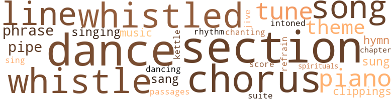
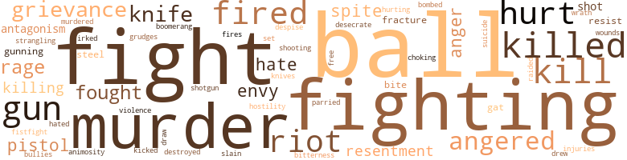

Policy King (The), by Caldwell, Lewis A.H. (1945)
75 music-related terms matched in this text.
Most frequent terms in this topic: dance (7); section (6); chorus (5); song (4); whistle (4)
chapter.n.01
Definition: a subdivision of a written work; usually numbered and titled
| word | sentence |
|---|---|
| chapter | After repeating this passage he said , " My Christian friends , the text this morning is from the twenty-third chapter of Proverbs , the twenty-second verse . |
chorus.n.01
Definition: any utterance produced simultaneously by a group
| word | sentence |
|---|---|
| chorus | The chorus of amens which greeted this announcement told Reverend Stowe that he had carried his point . |
| chorus | Spontaneously the audience joined in when he reached the chorus , which was repeated twice . |
| chorus | There was a mumbled chorus of " yeahs " and " O. K. 's " as the fifteen men departed . |
| chorus | The other members joined in the chorus . |
clipping.n.01
Definition: an excerpt cut from a newspaper or magazine
| word | sentence |
|---|---|
| clippings | There were newspaper clippings of President Warren G. Harding , who , it was rumored , was a Negro ; Jack Dempsey , Babe Ruth , Douglas Fairbanks , Duke Slater , Grover Cleveland Alexander , Paul Robeson , Big Bill Tilden , De Hart Hubbard , Moon Baker , and Sol Butler . |
| clippings | While she was carefully pasting her clippings in a scrapbook one evening , Velma came home in an alcholic mood . |
dance.n.01
Definition: an artistic form of nonverbal communication
| word | sentence |
|---|---|
| dance | The social committee of the Quibblers had , after much planning , arranged its first dance and was jubilant over the fact that it had rented the Pythian Temple on South State Street . |
| dance | Reuben Douglas , long considered radical by students and professors alike , objected to the dance because it was on the same night as the senior ball . |
| dance | But the editorial in the paper showed that Reuben had actually been to the dance . |
| dance | Helen , who had been his date at the senior class day dance , beamed over the recognition given her brother by his fellow-students . |
dance.v.03
Definition: skip, leap, or move up and down or sideways
| word | sentence |
|---|---|
| dance | The two large rooms at the front of the apartment were packed with couples who , had they been inclined to dance , could take no more than one step at a time . |
| dance | I 'll dance with you 'cause I do n't want no trouble . |
| dancing | Ever now and then some big shot tries to close in on me , but I 'm still riding high , and the politicians in both parties are dancing to my tunes . " |
| dance | His gray eyes seemed to dance , giving him an unusual appearance . |
hymn.n.01
Definition: a song of praise (to God or to a saint or to a nation)
| word | sentence |
|---|---|
| hymns | Negro preachers were condemning the policy game from every pulpit , but most of their members were playing the numbers of the hymns for gigs . |
| hymn | Because ninety per cent of their membership play policy , some of whom get their gigs from the hymn numbers sung in church on Sundays . " |
kettle.n.04
Definition: a large hemispherical brass or copper percussion instrument with a drumhead that can be tuned by adjusting the tension on it
| word | sentence |
|---|---|
| kettle | She lifted the steaming kettle from the stove and spat a healthy wad of well-chewed tobacco into the fire . |
music.n.01
Definition: an artistic form of auditory communication incorporating instrumental or vocal tones in a structured and continuous manner
| word | sentence |
|---|---|
| music | The excited graduates were concentrating on keeping in step with the music . |
| music | He groaned for having let himself be trapped , but now he must face the music . |
passage.n.06
Definition: a short section of a musical composition
| word | sentence |
|---|---|
| passages | Rev. Marshall had read the Bible to her daily and she was familiar with several passages from Genesis , St. Matthew , Proverbs , and Revelation before she was ten years old . |
phrase.n.02
Definition: a short musical passage
| word | sentence |
|---|---|
| phrase | His first impulse was to leave without another word , but the phrase , " I 'm satisfied now " seemed to stick in his mind . |
| phrase | That 's the phrase he 'd used in that debate against Hyde Park . |
| phrase | Reverend Stowe mumbled a few words but Helen caught only the phrase , " this fight 's just begun . " |
piano.n.01
Definition: a keyboard instrument that is played by depressing keys that cause hammers to strike tuned strings and produce sounds
| word | sentence |
|---|---|
| piano | Jake then locked the machine and went over to the piano ; he had to adjust the stool before striking up a lazy tune . |
| piano | Later , he had always relied upon her to play the piano and organ in church at the poorly attended prayer meetings , oftentimes , being called upon to read the Scripture Lesson . |
| piano | Joe rose and took his hat from the old piano . |
pipe.n.04
Definition: a tubular wind instrument
| word | sentence |
|---|---|
| pipe | Both took comfortable chairs and Reverend Jones lit his pipe . |
| pipe | Dr. Empson leaned back in his confortable leather chair and lit a huge under-slung pipe . |
| pipe | Both men shifted nervously in their chairs and the Examiner re-filled his pipe . |
refrain.n.01
Definition: the part of a song where a soloist is joined by a group of singers
| word | sentence |
|---|---|
| refrain | He knew instinctively that this was the psychological moment to close what unfortunately had developed into a debate and concluded by saying , in a stage whisper , " Let us , therefore , my friends , refrain from consigning the soul of Joe Marshall . |
| chorus | Rejoining their two companions in the crowded front room , they blurted in chorus , " They 've pulled a fast one ! " |
rhythm.n.04
Definition: the arrangement of spoken words alternating stressed and unstressed elements
| word | sentence |
|---|---|
| rhythm | The red and blue bulbs in the floor lamp made recognition of anyone impossible ; the swaying silhouettes were responding to the recorded rhythm of " Shake That Thing . " |
score.n.02
Definition: a written form of a musical composition; parts for different instruments appear on separate staves on large pages
| word | sentence |
|---|---|
| score | Joe never hurt anybody ; he tried to make Ma 's life happy by freeing her from maid-work ; and when somebody comes along and murders him in cold blood , whose job is it to even the score ? |
section.n.01
Definition: a self-contained part of a larger composition (written or musical)
| word | sentence |
|---|---|
| section | She wondered if Joe had been forced to move the wheel again , but she knew that this section was too ritzy for that . |
| section | His plan of exploitation immediately established Sam as the leader and contact man in the section of town inhabited by Negroes . |
| section | Jerry turned to the picture section of the paper and saw the photos showing policemen swinging pickaxes into the paraphernalia found in the policy shops that had been raided . |
| Section | The prosecutor , in taking exception to this ruling , insisted upon quoting Section 414 of the act in question , as follows : Evidence . |
| section | Skipping several pages displaying his own feats as a high school athlete , Jerry came to the section in which he had pasted his own heroes in various walks of life . |
| section | John T. McCutcheon 's famous cartoon , " Injun Summer " made its annual appearance in the rotogravure section of the paper . |
| section | As chief executive of this city , you are the commander-in-chief of the police department , and we feel that you are anxious to see that the police enforce the law in every section of our great city . |
sing.v.02
Definition: produce tones with the voice
| word | sentence |
|---|---|
| sang | The choir sang two verses of " I Could n't Hear Nobody Pray . " |
| sang | Pisha took one step backward and relaxed as he , in clear concise English , sang the first stanza of The Old Rugged Cross . |
| sung | Jerry felt even more manly than ever in the presence of Helen who had always sung his praises . |
| sing | We can also provide a quartette to sing the numbers you want . " |
| sung | Because ninety per cent of their membership play policy , some of whom get their gigs from the hymn numbers sung in church on Sundays . " |
singing.n.01
Definition: the act of singing vocal music
| word | sentence |
|---|---|
| singing | Shifting into a singing talk she continued , " Ladies and gentlemen ; for you certainly have been all of that , you darlings ! |
| singing | The singing stopped and the visiting minister rose slowly , smiling . |
song.n.01
Definition: a short musical composition with words
| word | sentence |
|---|---|
| song | The theme song , " My Diane , " was a catchy tune and they both enjoyed the program . |
| song | After what seemed like an eternity to Helen , now mystified by the burning incense and ceremony , Madam Evon raised her right hand , and in a deliberately studied voice intoned , " This is the time for song . " |
| song | Helen felt Mrs. Jones ' huge body quiver on the sofa beside her and realized that the song had affected her companion deeply . |
| song | The white-robed choir filed in chanting a new song and the clear tones of the leaders seemed to inspire faith and renewed hope in the future . |
spiritual.n.01
Definition: a kind of religious song originated by Blacks in the southern United States
| word | sentence |
|---|---|
| spirituals | Professor Handy 's choir had completed the second of two spirituals when Mayor Barkley arose to present " the principal speaker of this victory program . " |
suite.n.01
Definition: a musical composition of several movements only loosely connected
| word | sentence |
|---|---|
| suite | Jerry then noticed that what had appeared to be a one room office was really a suite of rooms that had been furnished completely . |
swing.n.05
Definition: a style of jazz played by big bands popular in the 1930s; flowing rhythms but less complex than later styles of jazz
| word | sentence |
|---|---|
| jive | " He gave me that jive about me being the only one , but I told him that we 'd just keep our bargain . |
theme.n.03
Definition: (music) melodic subject of a musical composition
| word | sentence |
|---|---|
| theme | The theme song , " My Diane , " was a catchy tune and they both enjoyed the program . |
| theme | All of us can , at least , write a theme on some interesting subject . |
| theme | He tried to forget the matter entirely by tackling a theme for his next English class . |
tone.v.01
Definition: utter monotonously and repetitively and rhythmically
| word | sentence |
|---|---|
| intoned | After what seemed like an eternity to Helen , now mystified by the burning incense and ceremony , Madam Evon raised her right hand , and in a deliberately studied voice intoned , " This is the time for song . " |
| chanting | The white-robed choir filed in chanting a new song and the clear tones of the leaders seemed to inspire faith and renewed hope in the future . |
tune.n.01
Definition: a succession of notes forming a distinctive sequence
| word | sentence |
|---|---|
| tune | Jake then locked the machine and went over to the piano ; he had to adjust the stool before striking up a lazy tune . |
| tune | The theme song , " My Diane , " was a catchy tune and they both enjoyed the program . |
| tunes | Ever now and then some big shot tries to close in on me , but I 'm still riding high , and the politicians in both parties are dancing to my tunes . " |
| line | Sam was pleading to her as he had never done before and the thought that he might not be just " handing her a line " frightened Mattie . |
| line | His own ego prevented him from turning the boy down cold , yet murder was out of his line . |
| line | The work never seemed to end , and the long line of " reliefers " formed at day break hoping to get inside the office and make an application before the door was locked at two in the afternoon . |
| line | The cops were careful not to " get out of line " for fear of arousing the " big shot " as he was generally known . |
whistle.v.01
Definition: make whistling sounds
| word | sentence |
|---|---|
| whistled | " Wow ! " whistled Jerry to himself , " I 've got to make good . |
| whistle | Last minute bets were being placed hastily before the warning whistle sounded . |
| whistle | Lissen fo ' tha whistle . |
| whistle | All dem who do n't git dey plays in fo ' tha whistle is outta luk . " |
| whistled | Several of the men writers whistled softly and winked at each other . |
| whistle | The shrill sound of the whistle brought a sudden stop to all the commotion . |
| whistled | " Whew ! " whistled Jerry ; " now your old man 's smart . |
| whistled | " Wheew ! " whistled Velma . |
216 violence-related terms matched in this text.
Most frequent terms in this topic: ball (16); fight (15); fighting (14); murder (10); killed (10)
anger.n.01
Definition: a strong emotion; a feeling that is oriented toward some real or supposed grievance
| word | sentence |
|---|---|
| anger | Her actions convinced him that he did have a chance ; his anger flared when he thought of her being deathly afraid of Sam . |
| anger | So intense was his anger that everything else seemed blurred . |
| anger | After taking it to the news room his anger began to cool , and he felt better . |
anger.v.02
Definition: become angry
| word | sentence |
|---|---|
| angered | The color returned to her cheeeks , however , as she angered at the idea . |
| angered | He thought of his continued antagonism toward the policy racket and how Joe 's offer of a job had angered him . |
| angered | This attitude angered Helen still more but she tried to compose herself while waiting her turn to answer . |
| angered | These last remarks angered Helen . |
| angered | This spirited rebuff angered the Mayor , but the deep flush soon faded . |
| angered | A reporter 's flashbulb angered His Honor as he stepped from the machine . |
| angered | This angered him no end . |
animosity.n.01
Definition: a feeling of ill will arousing active hostility
| word | sentence |
|---|---|
| animosity | I have no animosity toward him and his associates . |
bombard.v.02
Definition: throw bombs at or attack with bombs
| word | sentence |
|---|---|
| bombed | It was across the street from the old Oscar Delaney place , which had been bombed by whites in a desperate effort to check the " Nigger invasion " during the early twenties . |
boomerang.n.01
Definition: a curved piece of wood; when properly thrown will return to thrower
| word | sentence |
|---|---|
| boomerang | This announcement was like a boomerang on the men . |
brawl.n.02
Definition: a noisy fight in a crowd
| word | sentence |
|---|---|
| free-for-all | Mrs. McBride 's footsteps were heard outside the door and her pounding disrupted the Bull Session and a possible free-for-all . |
contemn.v.01
Definition: look down on with disdain
| word | sentence |
|---|---|
| despise | In a booming voice he read , " Hearken unto thy father that begat thee , and despise not thy mother when she is old . " |
desecrate.v.01
Definition: violate the sacred character of a place or language
| word | sentence |
|---|---|
| desecrate | " My friends , it is not my purpose to desecrate this , a solemn occasion for most of us , but a sad one for the family of Mr. Marshall . |
destroy.v.04
Definition: put (an animal) to death
| word | sentence |
|---|---|
| destroyed | It was revealed at the trial that every policy wheel in the city had been destroyed except the two which were put in evidence . |
draw.v.23
Definition: pull (a person) apart with four horses tied to his extremities, so as to execute him
| word | sentence |
|---|---|
| draw | Only two weeks before , he had had Stacey draw up a will leaving , in the event of his death , everything he might own to one Mary B. Marshall , mother . |
| drew | The car drew up to the curb across the street from the Copernicus school , and the Marshalls entered the house with the wreath on the door . |
envy.n.01
Definition: a feeling of grudging admiration and desire to have something that is possessed by another
| word | sentence |
|---|---|
| envy | Harry 's collegiate car proved to be quite an asset and made him and Jerry the envy of the others . |
| envy | Why that piece of research is the envy of all the senior students , and you 're just a freshman . |
| envy | She was the envy of many , and it was only her simple way of living , together with a wonderful personality that kept her friends from criticizing how she had come to have money . |
fight.n.02
Definition: the act of fighting; any contest or struggle
| word | sentence |
|---|---|
| fighting | Of course , we all know that the policy business is no tea party ; but I have figured that there is entirely too much fighting among the people running the business , and I think that we pay too big a price to the cops . |
| fighting | His fighting days ceased shortly after the Chicago race riot of 1919 , and eventually he entered the policy racket . |
fight.n.05
Definition: a boxing or wrestling match
| word | sentence |
|---|---|
| fight | We landed in Memphis the next day , and I found out later that Sam had got in a fight and slit a man 's throat . |
| fights | ' Course him 'n Yallow Sam cudent git ' long , but dey ai n't never had no fights . |
| fight | Had Pop argued , or put up a fight he would have felt better in a way . |
| fight | She had David shortly after he proposed to Helen , and had hoped , year after year , that her baby would get married and forget about her fight against the policy racket . |
| fight | Reverend Stowe said , " There , my friends , is an example of our approach to this fight . |
| fight | " Reverend Stowe , I want you and your co-workers to know that the City Improvement Association considers it a distinct honor to join in this great fight . |
| fight | Reverend Stowe mumbled a few words but Helen caught only the phrase , " this fight 's just begun . " |
| fight | Helen was stung by Ma 's plea but never thought of giving up her fight against the policy racket . |
| fight | Many new members and several others who had become inactive returned to the fight . |
| fight | Some of us have worked hard in this fight with little chance of victory . |
| fight | He indicated that the fight was by no means won but victory was definitely in sight . |
| fight | Ladies and gentlemen , I give you Mrs. Helen Thompson , a product of your own community , who has been a leader in your fight for decent living conditions during the past decade . " |
fight.v.02
Definition: fight against or resist strongly
| word | sentence |
|---|---|
| fought | We skipped meals , our clothes that had n't been pawned got seedy and we fought like cats and dogs . |
| Fight | " Clarence Darrow Urges Negroes to Fight for Equality . " |
| fought | I fought my way back to a plane of decency and respectability after being a gambler . |
| fight | If you are convinced that the policy business is wrong , and is hurting your race , why not fight it . |
| fought | They obeyed , and after parking , fought their way to within fifty feet of the Marshall house , where they were stopped by a second officer , who demanded , " Well ! |
| fighting | Shake , and let 's talk instead of fighting . " |
| fighting | Then Pa and Joe started fighting . |
| fighting | If he stays in this racket , I 'm going to spend my life fighting it - at least until it 's legalized ! " |
| fighting | This achievement was taken in stride , and she felt better able to cope with the task of fighting Jerry . |
| fight | " I think that we should fight it with our last ounce of strength , Reverend Stowe ! " |
| fighting | " Friends , we must keep fighting ! |
| fighting | As leader of the racket , Jerry made it his business to know at all times what forces in the community were fighting it . |
| fighting | What the hell has a Negro to gain by fighting ? " |
| fight | Then what the hell have I got to fight for ? " |
| fighting | " I know what it means to you , child , but why do n't you quit fighting ? |
| fighting | Occasionally he screams as if terribly frightened , and waves his hands as if fighting off some unseen enemy . |
| fighting | He frankly admitted that public sentiment was a dangerous enemy , and pointed out the impossibility of the policy operators ' fighting the Committee 's present tactics . |
| fighting | Rev. Stowe had been fighting to have the game legalized or abolished since 1926 . |
| fighting | He died as he had lived - fighting for the betterment of his people . |
| fight | Den we must git gud leaders ta fight our battles . |
| fought | So Negro soldiers had fought in his army against the British ? |
fistfight.n.01
Definition: a fight with bare fists
| word | sentence |
|---|---|
| fistfight | Jerry 's roommate , Leroy King , had started a fistfight with Trigger twice luring the previous semester when the argument had got out of hand . |
fracture.n.01
Definition: breaking of hard tissue such as bone
| word | sentence |
|---|---|
| fractures | He remained as cool as possible , while examining the legs and arms for fractures . |
| fracture | Nurses and doctors were beginning to make progress with the fracture cases . |
fury.n.01
Definition: a feeling of intense anger
| word | sentence |
|---|---|
| rage | Out East the Numbers game seems to be the rage . " |
| rage | The girl was told that she could go to any university , now that there was money in the family , but Helen went into a rage as she stormed at Ma . |
| rage | He had worked himself into a rage and Mattie became a little nervous . |
| rage | Blinded with rage , Jerry rushed through the parlor and into the hallway where he went down the stairs two steps at a time . |
gag.v.06
Definition: cause to retch or choke
| word | sentence |
|---|---|
| choking | Helen 's face was flushed and she was choking with emotion . |
gall.v.02
Definition: irritate or vex
| word | sentence |
|---|---|
| irked | The policy barons were particularly irked over the sympathetic attitude of the newspapers toward the Committee 's work . |
gat.n.01
Definition: a gangster's pistol
| word | sentence |
|---|---|
| gat | If you 'll turn that gat loose I can talk . |
| gat | My gat 's at Pop 's . |
grudge.n.01
Definition: a resentment strong enough to justify retaliation
| word | sentence |
|---|---|
| grievances | " As I was saying before being so rudely interrupted , many of us feel that there should be a definite organization through which all Negro students could express their grievances to the University . |
| grudges | If this can be done we can eliminate all personal grudges , shake-downs and raids . |
| grievance | An illiterate Negro share-cropper telephoned the White House from Mississippi , and his grievance was corrected . |
| grievances | Although both loved their work despite its shortcomings , Velma came home in a huff one night in mid-August and began airing her grievances . |
| grievance | " Knowing what a busy man you are we have sent you , in writing , the specific details of our grievance . |
| grievances | " Day in and day out I listen to the grievances of various groups , racial , religious , community , those seeking special privileges , and all sorts of favors . |
gun.n.01
Definition: a weapon that discharges a missile at high velocity (especially from a metal tube or barrel)
| word | sentence |
|---|---|
| gun | Looked like everybody had a gun , knife or razor . |
| gun | Joe 's right hand was in his coat pocket , and she knew that he had his gun . |
| gun | Tawk quick ! " commanded Joe , still keeping her out of range in case Sam should reach for his gun . |
| guns | " What about the guns , Chito ? " |
| guns | " I expect them to do that , " replied Sam ; " I 'll be following you in the tan Marmon with the guns . |
| gun | " Joe never even had a chance to draw his gun . |
| guns | You and your crowd might as well have guns and blackjacks to take the money from these helpless Negroes ! |
| gun | This kind of business is worse than robbery with a gun ! " |
| guns | Three burly policemen with drawn guns pushed through . |
gun.v.01
Definition: shoot with a gun
| word | sentence |
|---|---|
| gunning | " Just because you 're the only man in the family does n't mean that you 've got to go gunning for the killer ! |
| gunning | If you must go gunning for that yellow bastard , I 'll go with you ! |
hate.v.01
Definition: dislike intensely; feel antipathy or aversion towards
| word | sentence |
|---|---|
| hated | During his three years at Holy Name , Reverend Stowe had come to be loved , feared and hated . |
| hate | I do n't hate Joe . |
| hate | Did she really hate Ma ? |
| hate | I ca n't hate him ! |
hostility.n.01
Definition: a hostile (very unfriendly) disposition
| word | sentence |
|---|---|
| hostility | As he lifted his huge frame to a standing position , there was no mistaking his complete hostility to this plan . |
hostility.n.02
Definition: a state of deep-seated ill-will
| word | sentence |
|---|---|
| antagonism | He thought of his continued antagonism toward the policy racket and how Joe 's offer of a job had angered him . |
| antagonism | She sensed , fully , her daughter 's antagonism toward her , but reasoned that any mother would have followed a similar course . |
| antagonism | Although they seldom saw each other except on Mothers ' Day and at Christmas time , he had felt that her marriage would serve to check this antagonism toward his work . |
hurt.v.04
Definition: cause damage or affect negatively
| word | sentence |
|---|---|
| hurting | If you are convinced that the policy business is wrong , and is hurting your race , why not fight it . |
injury.n.01
Definition: any physical damage to the body caused by violence or accident or fracture etc.
| word | sentence |
|---|---|
| injuries | I 'm tickled that your injuries were n't serious . |
| hurt | Looking directly at Pop , and assuming a hurt expression he said innocently , " Pop , I 've tried to play square with you . |
| hurt | The force with which he slammed the receiver onto the hook hurt Mattie 's eardrum . |
kick_back.v.02
Definition: spring back, as from a forceful thrust
| word | sentence |
|---|---|
| kicked | She kicked him on the ankle in the hope that he would not lose his sense of chivalry , but to no avail . |
kill.v.10
Definition: cause the death of, without intention
| word | sentence |
|---|---|
| killed | I 'd heap rather git a little charity and keep well than be taking chances of gitting killed when you least ' pect it I " She was assured that her case would receive immediate attention , and Helen left more determined now than ever to do something about the policy racket . |
| kills | But looks like the more you kills the more comes out . " |
| kill | Wuz n't fur maw 'n Jerry , ah 'd kill ' im . " |
| kill | He suddenly wanted to kill - kill to avenge Joe 's murder ! |
| kill | He suddenly wanted to kill - kill to avenge Joe 's murder ! |
| killed | Now that we 've buried Joe , I 'm not going to sit around without trying to find out why he was killed . |
| killed | Jerry took this chance for a talk with Mattie , and began the conversation by asking , " Do you have any real clues as to who killed Joe ? " |
| kill | Why could n't he go to St. Louis and kill that hoodlum with as little fuss as the latter had used in killing Joe ? |
| killing | Why could n't he go to St. Louis and kill that hoodlum with as little fuss as the latter had used in killing Joe ? |
| killed | My brother , Joe , was killed last week . |
| killed | I 've found out who killed him and I 'm either going after him or have you put a professional on the job and send me the bill ! " |
| kill | It ai n't being smart to go and kill somebody who you think bumped Joe off . |
| kill | He paused a moment for his words to take effect , then continued , " Ah 'm in a tough racket , Maw , but ah ai n't gon na kill nobody ' cept 'n self-defens ' . |
| kill | When I look back now , it 's a wonder I did n't go stone crazy - or kill myself ! |
| killed | Pa 's dead now , and my older brother got killed . " |
| killed | And when he got killed , my younger brother , Jerry , put himself at the head of the whole policy racket . |
| killed | Two hunger marchers and a policeman were killed . |
| killed | " I still say that we should not stoop to having men killed . |
| killing | Hell broke loose in Chicago 's Harlem last night when a time-bomb exploded in the Holy Name Baptist Church , corner of Garfield Boulevard and Dearborn Street , killing at least twenty-five persons . |
| killed | " Peter Salem , a Negro , shot 'n killed de British Commander on Bunker Hill . |
killing.n.01
Definition: an event that causes someone to die
| word | sentence |
|---|---|
| killing | You ai n't in Kentucky where this killing keeps on from one generation to the other . " |
killing.n.02
Definition: the act of terminating a life
| word | sentence |
|---|---|
| kill | He moved forward - closing in for the kill . |
knife.n.02
Definition: a weapon with a handle and blade with a sharp point
| word | sentence |
|---|---|
| knives | When the wagon came Big Six had a basket of razors , knives and pistols in addition to several questionable characters . |
| knife | Dey calls her switch-blade Sue 'cause she ai n't never widout her knife . |
| knife | Looked like everybody had a gun , knife or razor . |
| knife | I ai n't even got a pocket knife . |
| knife | Do n't even carry a pocket knife . |
| knife | Dey ai n't even got ta knife . " |
malice.n.01
Definition: feeling a need to see others suffer
| word | sentence |
|---|---|
| spite | She was a little spit-fire , that Helen ; but Jerry had taken up for him in spite of the old man . |
| spite | Helen , in spite of Velma 's opposition , had sent out notices for the first meeting of the Social Workers ' Round Table , and this provided the basis of the present discussion . |
| spite | In spite of their best efforts , Lanon has been suffering untold agony . |
murder.n.01
Definition: unlawful premeditated killing of a human being by a human being
| word | sentence |
|---|---|
| murder | And still , Negroes are yelling holy murder to get into these schools | where they 're not wanted . |
| murders | Maybe Jerry could figure out some way to stop the murders that crop up in the policy business ever so often . |
| murder | He suddenly wanted to kill - kill to avenge Joe 's murder ! |
| murder | Without knowing , he mumbled a pledge to avenge the murder . |
| murder | On Friday the following editorial appeared in an evening paper : BOOTLEGGING AND POLICY The cold-blooded murder of one Joe Marshall by unknown killers last night should serve to arouse the public and make it realize that the city is held in the vice-like grip of politically protected crime . |
| murders | Joe never hurt anybody ; he tried to make Ma 's life happy by freeing her from maid-work ; and when somebody comes along and murders him in cold blood , whose job is it to even the score ? |
| murder | She knew of Jerry 's dislike for the policy racket , and never had felt that he would want to go seeking revenge for Joe 's murder . |
| murder | His own ego prevented him from turning the boy down cold , yet murder was out of his line . |
| murder | " Your getting mixed up with another murder ai n't no good , kid . |
| murders | We 've got to bring about order in our business ; murders , gun-play and knifing must stop . |
| murder | " We are paying for protection for the privilege of operating the policy game because we want order - not cut-throat competition and murder . |
| murder | Lanon , it will be recalled , was suspected of the brutal murder of Joe Marshall , wealthy Chicago policy operator , several years ago . |
| murder | Attorney Everett Knoll had been planning to make the announcement that the federal government was to prosecute Chicago 's policy hustlers when news of the mass murder reached Washington . |
murder.v.01
Definition: kill intentionally and with premeditation
| word | sentence |
|---|---|
| slain | During the night and early morning thousands of persons , mostly curiosity seekers and policy folk , filed past the bier of the slain leader . |
| murdered | The leader of this organization was recently murdered by a time-bomb set off during a mass meeting being held in connection with the anti-policy campaign . |
musket_ball.n.01
Definition: a solid projectile that is shot by a musket
| word | sentence |
|---|---|
| ball | " I heard that you big-shots went down and had a ball in the jim-crow section . " |
| balls | " O. K. , " answered Terry , and as Sam racked the balls his opponent pushed through the crowd to the cue-stand . |
| balls | Terry broke the balls and the onlookers settled back in their seats in silence . |
| balls | Sam selected the big numbered balls , but missed a set shot . |
| ball | " De fo ball in de side pocket , " announced Terry . |
| ball | The ball headed unerringly for its destination and plunked into the leather netting . |
| ball | Terry finally took his shot , but the ball edged toward the corner pocket and careened crazily off the eight-ball into the center of the table . |
| balls | He quickly racked the balls , ignoring the houseman , and blurted to Terry . |
| balls | He hit the balls squarely , but , nothing fell . |
| balls | He ran three balls in rapid succession , and then turned to Terry with a warning . |
| ball | Joe was like a ball of iron around their necks ! |
| balls | In the keg was a small opening through which were emptied seventy-eight numbered balls made of a hard material . |
| ball | A barker began yelling in staccato fashion as each ball was handed to him . |
| ball | This year , the senior ball was being held at the Drake Hotel . |
| ball | Reuben Douglas , long considered radical by students and professors alike , objected to the dance because it was on the same night as the senior ball . |
| ball | None of us ever go to the senior ball anyway . |
| ball | Every Negro senior here should go to that ball ! |
| ball | The leading editorial was headed : SENIOR BALL GOES BLACK AND TAN Ignoring his lunch , the boy 's eyes devoured the article : The senior ball has come and gone . |
| ball | Reuben Douglas came in shortly afterwards and everyone swarmed about him for news about the senior ball . |
| ball | Jerry told of the excitement caused by Reuben 's attendance at the senior ball . |
| ball | Those bulls who do n't play ball will end up in the sticks . |
| ball | The ball rolled after touching the ground , and the long-legged Tommy circled the bases with ease before it was relayed to the catcher . |
| ball | When everyone had gone except Joe and Mattie , he gave a deep sight of relief and mumbled , " Ah 'd be a los ' ball in high weeds witout yu , Babe . |
open_fire.v.01
Definition: start firing a weapon
| word | sentence |
|---|---|
| fired | When he set it down , the alcohol oozing through his body suddenly fired his desire for her ; he knew that he would have to chance a showdown and hope for the best . |
| fired | This early experience in helping people who were lonesome and hungry for words of cheer during sieges of sickness had fired Helen 's belief in the work which her father was doing . |
| fired | Am I fired ? |
| fired | He just fired me and I got ta leave town . |
| fired | Do n't tell me that they 've fired you at State - and you the biggest man in the department ? " |
| fired | The guard knitted his brow , scowling , and fired a series of questions . |
| fired | Well , Anna Rubel got her told in open meeting , and we 're just waiting to see if she gets fired . |
| fired | Mayor Barkley had been polling the group individually with his experienced , meaningful glances as he fired this series of questions , and was quick to notice the negative reaction . |
| Fires | Fires were breaking out in various sections of the church , but were quickly extinguished with chemicals . |
pain.v.02
Definition: cause emotional anguish or make miserable
| word | sentence |
|---|---|
| hurt | Mattie knew that he was angry and it hurt her . |
| hurt | Although his pride was hurt , he secretly admired the smooth manner in which this subordinate had deceived him . |
| hurt | Sapi 's pride was hurt . |
| hurt | Her plea hurt him , but he did n't show it . |
| hurt | Helen Grows Up Helen , shocked and hurt by Jerry 's decision to enter the policy business , went about her work and studies during the next few weeks in a listless manner . |
| hurt | It certainly has n't hurt us in the least . " |
parry.v.01
Definition: impede the movement of (an opponent or a ball)
| word | sentence |
|---|---|
| parried | She squirmed in her chair and smilingly parried a question . |
pistol.n.01
Definition: a firearm that is held and fired with one hand
| word | sentence |
|---|---|
| pistols | When the wagon came Big Six had a basket of razors , knives and pistols in addition to several questionable characters . |
| pistol | Reaching into a drawer of the desk he pulled out several packets of bills and an automatic pistol which he arranged carefully in front of him . |
| pistols | Each man was patted down before entering the elevator and , as a result , several pistols , razors , and switch-blades were checked at the desk . |
raid.v.01
Definition: search without warning, make a sudden surprise attack on
| word | sentence |
|---|---|
| raided | Despite the fact that Pop gave him his start , the police raided Joe 's place on Calumet Avenue two months after he opened . |
resentment.n.01
Definition: a feeling of deep and bitter anger and ill-will
| word | sentence |
|---|---|
| resentment | There seemed to be an air of resentment throughout the packed chapel . |
| resentment | In this moment of rejoicing Helen forgot her resentment toward Joe and smiled broadly at him . |
| resentment | Are there those among us who feel that the present state of public resentment will endure ? |
| bitterness | Jerry put all the bitterness possible in his reply . |
resist.v.04
Definition: withstand the force of something
| word | sentence |
|---|---|
| resist | Before she could resist , his passionate grip held her helpless and he kissed her . |
| resist | He did not object for he was certain that she was unable to resist him now . |
riot.n.01
Definition: a public act of violence by an unruly mob
| word | sentence |
|---|---|
| riot | T got scared , Miss. ' Member that riot they had ' bout three weeks ago in Ben Hilliard 's place on 39th Street ? " |
| riot | As King started for his seat a small riot broke out because ten fellows wanted to talk at once . |
| riot | His fighting days ceased shortly after the Chicago race riot of 1919 , and eventually he entered the policy racket . |
| riots | He will be questioned particularly regarding the recent riots and disturbances in the policy circles . |
| riots | Before Chicago could get its relief machinery in motion several riots broke out in the temporary offices . |
| riots | Ruthless , brutal , always starting riots , and packed with Reds ! " |
| riot | " Boy , was n't that a riot ? |
shoot.v.02
Definition: kill by firing a missile
| word | sentence |
|---|---|
| shot | " Nonsense ! " shot back Velma . |
| shot | John , Dave , and the other boys usually shot craps in the back of the shining parlor but he would spend his time learning something worthwhile . |
| shot | " You seem to know so much , answer that for yourself , " shot back the sarcastic Mattie . |
shooting.n.02
Definition: killing someone by gunfire
| word | sentence |
|---|---|
| shooting | Fist fights , shooting and cutting scrapes resulted . |
shotgun.n.01
Definition: firearm that is a double-barreled smoothbore shoulder weapon for firing shot at short ranges
| word | sentence |
|---|---|
| shotgun | " We find that Joseph Marshall died from shotgun wounds inflicted by one or more persons whose identity is unknown . " |
sic.v.01
Definition: urge to attack someone
| word | sentence |
|---|---|
| set | I 've had my heart set on going . |
sting.n.03
Definition: a painful wound caused by the thrust of an insect's stinger into skin
| word | sentence |
|---|---|
| bite | " Maybe they 'll have a bite with me . |
| bite | Once settled , he took a bite of the ham sandwich and began reading . |
strangle.v.01
Definition: kill by squeezing the throat of so as to cut off the air
| word | sentence |
|---|---|
| strangling | After reviewing her experiences during the past six weeks , she concluded , " I wish to suggest that the time is most appropriate for the law-enforcing agencies of the City of Chicago to take full cognizance of this petty racket which is slowly strangling the economic life of the dependent groups . " |
strong-arm.v.02
Definition: be bossy towards
| word | sentence |
|---|---|
| bullies | I 'm going to the Mayor and see if you bullies ca n't do some police work instead of running around the South Side looking for graft ! " |
suicide.n.01
Definition: the act of killing yourself
| word | sentence |
|---|---|
| suicide | Banks failed by the dozen , factories closed daily , some business executives committed suicide . |
sword.n.01
Definition: a cutting or thrusting weapon that has a long metal blade and a hilt with a hand guard
| word | sentence |
|---|---|
| steel | We 've got people who clerk in the post-office ; some work in the steel mills , and the stock yards ; others teach school . |
| steel | Sam suspected that negotiations were being carried on by Pop to take over the policy racket in the steel mill area . |
violence.n.01
Definition: an act of aggression (as one against a person who resists)
| word | sentence |
|---|---|
| violence | Several of the operators wanted to resort to violence , but as Jerry pointed out , this was the worst move that they could make . |
wound.n.01
Definition: an injury to living tissue (especially an injury involving a cut or break in the skin)
| word | sentence |
|---|---|
| wounds | " We find that Joseph Marshall died from shotgun wounds inflicted by one or more persons whose identity is unknown . " |
wrath.n.01
Definition: intense anger (usually on an epic scale)
| word | sentence |
|---|---|
| wrath | Should relief be issued before an applicant 's eligibility is established , or should the wrath of some powerful political figure be chanced ? |
178 religion-related terms matched in this text.
Most frequent terms in this topic: church (35); God (22); Church (16); preacher (15); prayer (10)
amen.n.01
Definition: a primeval Egyptian personification of air and breath; worshipped especially at Thebes
| word | sentence |
|---|---|
| amens | The chorus of amens which greeted this announcement told Reverend Stowe that he had carried his point . |
| amens | Several women grunted loud amens , and others applauded this philosophy but the speaker continued . |
| amens | The frequent applause and occasional amens assured him that most of his audience liked what he was saying . |
baptist.n.01
Definition: follower of Baptistic doctrines
| word | sentence |
|---|---|
| Baptists | He wanted to see new faces and learn how the Baptists worshipped . |
| Baptists | A custom , peculiar to the Baptists , served Jerry in good stead . |
| Baptist | " De furst fur trader right here 'n yo own town , Chicago , wuz a Negro named John Baptist DeSable . |
baptize.v.01
Definition: administer baptism to
| word | sentence |
|---|---|
| christened | She resembled her father so strongly that the neighbors wanted her christened " Richard " after Pa . |
| christened | " Old Reliable , " as the roadster had now been christened , was oiled and greased that Friday . |
| baptised | Of course , he was baptised in the Methodist Church when he was a baby , but I do n't think he 's been to a sermon in over seven years , except when Pa died . |
bible.n.02
Definition: a book regarded as authoritative in its field
| word | sentence |
|---|---|
| bible | " This is the policy players ' bible ! |
blessing.n.05
Definition: the act of praying for divine protection
| word | sentence |
|---|---|
| blessings | Little food had been eaten by the Marshalls since Saturday when Pa had called them , each by name - except Joe - to his bedside and in a voice of unusual strength had given his final instructions and blessings . |
catholic.n.01
Definition: a member of a Catholic church
| word | sentence |
|---|---|
| Catholic | But you know , we 've never had a Catholic President . |
chapel.n.01
Definition: a place of worship that has its own altar
| word | sentence |
|---|---|
| chapel | " One thousand , " came the proud reply , " you know we opened our new chapel last week ! " |
| chapel | Burial would be on Saturday from the chapel . |
| chapel | By ten , every seat in the chapel was taken ; and half an hour later the doors had to be locked . |
| chapel | There seemed to be an air of resentment throughout the packed chapel . |
christendom.n.01
Definition: the collective body of Christians throughout the world and history (found predominantly in Europe and the Americas and Australia)
| word | sentence |
|---|---|
| Christianity | Church membership and Christianity are not necessarily the same . |
christian.n.01
Definition: a religious person who believes Jesus is the Christ and who is a member of a Christian denomination
| word | sentence |
|---|---|
| Christian | Forceful in manner and a devout Christian , the young bride-groom had showed great promise . |
| Christians | This is his first trip here in over ten years , but his name is familiar to Christians everywhere . " |
church.n.02
Definition: a place for public (especially Christian) worship
| word | sentence |
|---|---|
| church | For Jerry , who had only one Sunday : each month , the question of church membership never ne up . |
| church | He always had been taught , however , to do but one ing on Sunday - go to church . |
| church | As Jerry , who had always gone to church , looked about him , he guessed that this audience was above the average Negro religious group in economic stability and intelligence . |
| church | Jerry wanted to get out of the church quickly , but he and his companion had seats well toward the front of the building . |
| church | " Now my friends , I came to your homes as your minister ; it was my duty to know why you did n't come to church often . |
| church | " The families of some of our policy bosses belong to this church . |
| church | " Convinced as I am , then , that policy ca n't be stopped I 'm starting a drive to have it licensed by the State , and I 'm calling on you , the members and friends of this church , to join me in this campaign . " |
| church | Later , he had always relied upon her to play the piano and organ in church at the poorly attended prayer meetings , oftentimes , being called upon to read the Scripture Lesson . |
| church | She was always the youngest member of the sick committee in the church , and it usually fell her lot to write messages of cheer to accompany flowers or other tokens that were sent to members who were absent due to illness . |
| church | He renewed many acquaintances at St. Paul 's that Sunday , and on Labor Day they attended the church picnic . |
| churches | If I had my way I 'd do away with schools run by churches . |
| church | In addition to those members of his family Reverend Marshall had talked to , there had been Dr. George W. Prinze , who knew that the end was but a matter of minutes ; Mrs. Johnson , a trained nurse , who was also a member of the church , and two faithful deacons , Joe , at his mother 's request , had stood just outside the room in case his father , on his death bed , might wish to reclaim him as his son . |
| churches | Joe had argued that he did not like store-front churches , and that if his father cared anything about the family , he would stop trying to preach and get a job . |
| church | You see , he did n't belong to church in the strict sense of the word . |
| church | But , I was wondering , Reverend , if you could give him a church funeral just for Ma 's sake ? " |
| church | " You see , son , I 've got the members of my church to think about . |
| church | Joe must be buried with decent services , and in a church if possible . |
| church | Suddenly he thought of a plan whereby he could be certain of the kind of funeral Ma would like , although he 'd have to forget the church idea . |
| churches | He had two other rural churches during the next two years , but the Methodist Conference of 1904 sent him to Evansville , Indiana . |
| church | Throughout the day and night several members of Ma 's church , many of Mattie 's friends , and most of Joe 's four hundred writers had all stopped briefly to offer condolences . |
| church | I can picture him now , saying to himself , ' I 'll join the church later ; there 's plenty of time for that ; I 'm young . ' |
| church | I 'm certain that most of you have not seen the inside of a church for many moons . |
| church | " I 'm inclined to believe that a man can be a child of God without holding membership in a church , " continued Reverend Stanton . |
| church | You 've got your church work and your club to keep you busy ; Jerry will see that nothing interferes . |
| church | " I 'm not trying to run your life son , but I 'd feel a lot better if you 'd try to go to church once in a while . |
| church | Trying to keep him clean , fix meals , take care of the parsonage , and going to church , made a wreck out of me . |
| church | Because ninety per cent of their membership play policy , some of whom get their gigs from the hymn numbers sung in church on Sundays . " |
| church | If I promise you that I 'll start going to somebody 's church from next Sunday on will that be alright ? |
| church | Fires were breaking out in various sections of the church , but were quickly extinguished with chemicals . |
| church | Committees from practically every civic and church group on the South Side took advantage of this opportunity to air their views . |
| church | Within a week the District Attorney announced that he had secured full confessions from the two operators who were responsible for bombing the church . |
church.n.04
Definition: the body of people who attend or belong to a particular local church
| word | sentence |
|---|---|
| Church | When his turn came on the third Sunday in July , 1926 , Jerry agreed to go with a friend who was a member of a ge Baptist Church . |
| Church | When Jerry and his friend entered the Holy Name Baptist Church , he was in high spirits . |
| church | Turning his attention again to the pulpit , Jerry heard the speaker saying , ' The records of this church show over five thousand members . |
| Church | Everyone seemed to feel that he was talking to him individually as he added , " Why right here in our own Church , we gamble ! |
| church | I believe that a minister of a large church should make himself clear on all subjects of wide public interest at all times . |
| Church | The picnic given by St. Paul 's Church in the Forest Preserve had been a field day for him ; he had won first place in four of the track events . |
| Church | The Marshalls had seemed not to notice the long funeral procession , the flower-covered coffin , and the many resolutions and telegrams which had been read at the St. Paul 's Methodist Church on Wabash Avenue . |
| church | " After church Sunday three girls pointed to me and whispered ' That 's Joe Marshall 's kid sister ! |
| church | All of Pa 's church friends were talking about it . |
| Church | Of course , he was baptised in the Methodist Church when he was a baby , but I do n't think he 's been to a sermon in over seven years , except when Pa died . |
| church | When the night clerk answered , he inquired , " Is it possible to get a preacher for your funerals if the dead man did n't belong to church ? " |
| churches | After a vocal solo , Reverend Stanton said , " The mother of the deceased belongs to one of the outstanding churches in America . |
| Church | I present to you the noted minister of St. Paul 's Methodist Church , Reverend Jones . " |
| church | There is no excuse for remaining outside the church of God . " |
| Church | Church membership and Christianity are not necessarily the same . |
| churches | Some of the most sinful people I know are the pillars of their respective churches ! " |
| Church | The wave of anti-gambling publicity stirred into action another veteran foe of the policy racket - Reverend Stowe of the Holy Name Baptist Church . |
| Church | Church work , clubs , and a lifetime membership in the Y. W. C. A. kept her busy , but she was unable to shake off that deep seated restlessness which had begun to be noticeable . |
| Church | On January 5 , 1941 , two days later , Ma , still confused over the talk with Helen , entered her regular pew at St. Paul 's Church . |
| Church | " Sisters and brothers , and friends , St. Paul 's is extremely fortunate this morning in having one of the leaders of the Methodist Church as a guest speaker . |
| Church | On April 30 , 1941 , the Citizen 's Committee held a meeting at the Holy Name Baptist Church . |
| Church | The " Star News " carried a graphic account of the disaster under the heading : THIRTY NEGROES DIE IN POLICY WAR Bomb Quells Anti-Racket Meeting in Church . |
| Church | Hell broke loose in Chicago 's Harlem last night when a time-bomb exploded in the Holy Name Baptist Church , corner of Garfield Boulevard and Dearborn Street , killing at least twenty-five persons . |
| church | More than 2,000 followers and sympathizers of the Reverend Stowe were in the church when the bomb went off . |
| Church | " The terrible tragedy which occurred at the Holy Name Church was not the fault of the policy operators - at least not theirs alone . |
confession.n.05
Definition: the document that spells out the belief system of a given church (especially the Reformation churches of the 16th century)
| word | sentence |
|---|---|
| confessions | Within a week the District Attorney announced that he had secured full confessions from the two operators who were responsible for bombing the church . |
curate.n.01
Definition: a person authorized to conduct religious worship
| word | sentence |
|---|---|
| pastor | I 've asked my pastor , Reverend Jones of St. Paul 's , to say a few words . " |
| pastor | We have asked the pastor to say a few words in her behalf . |
| pastor | Included in this number was the pastor , Rev. Ernest C. Stowe , whose remains were so finely mangled that it will be impossible to reconstruct the corpse . |
eden.n.01
Definition: any place of complete bliss and delight and peace
| word | sentence |
|---|---|
| heaven | If you , his friends , are expecting me to preach him into heaven , I 'll have to disappoint you . |
god.n.03
Definition: a man of such superior qualities that he seems like a deity to other people
| word | sentence |
|---|---|
| God | Fay had hardly seen the last one to the door , before she blurted , " For God 's Sake , let some air in here before I pass out . |
| God | As the laughing ceased , the minister went on , " My duty to you and to God is to let you know that raffling off turkeys and playing policy are similar . |
| God | At least half of you play policy , and God knows that when you risk your money on a ten thousand-to-one chance you 've got a problem . |
| God | Let 's stop straightening our kinky hair ; quit bleaching our black skins ; and for God 's sake go to our own schools and develop race pride ! " |
| God | You wo n't really be a maid , it 's more like a companion , secretary and God knows what else . |
| God | " Tha old man 's too strict - always talkin ' ' bout God and Jesus Christ , 'n his foks starvin ' . |
| God | I prayed to God if I got outta that mess , I 'd never fool with no more policy . |
| God | " Yes , thank God ; I 've been yelling here since two o'clock ! |
| God | Helen had lost control of herself only once - when the preacher warned everyone to get right with his God so when death comes there wo n't be any fear of a burning hell , but everlasting joy in a land of milk and honey . |
| God | God will help . |
| God | God bless you all ! " |
| God | He 's the one that 's got to answer to God for his conduct down here ! " |
| God | From all I have been able to gather , however , he was not a child of God . |
| God | God would frown on me for such a hypocritical act . |
| God | There is no excuse for remaining outside the church of God . " |
| God | " I 'm inclined to believe that a man can be a child of God without holding membership in a church , " continued Reverend Stanton . |
| God | He then turned to answer the charge made against him and with biting sarcasm he said , " I hope to God that Niggers like you quit coming into the world ! |
| God | She now wondered , and asked God in her prayers , if life was really worth living . |
| God | I thanked God that my three children were healthy and in their right minds , and I could give them the best years of my life . |
| God | Helen was serious , however , as she replied , " I 'm glad for you , Miss Schultz , but God knows I 'm scared to death over the thought of losing you ! |
| God | You white folks own us body and soul , but by God I 'll help stop it if I keep my wits ! |
| God | Now quit the stalling or , by God , we 'll go through this joint with a fine tooth comb . " |
godhead.n.01
Definition: terms referring to the Judeo-Christian God
| word | sentence |
|---|---|
| Almighty | This being true , he should have been ever seeking guidance from the Almighty . " |
hell.n.01
Definition: any place of pain and turmoil
| word | sentence |
|---|---|
| Hell | I , too , am unacquainted with Joe Marshall in life , but unlike the previous speaker I am not inclined to consign his soul to Hell and start converting the congregation , thus boldly assuming that everyone here lives in sin . |
| hell | What the hell has a Negro to gain by fighting ? " |
holy_place.n.01
Definition: a sacred place of pilgrimage
| word | sentence |
|---|---|
| Holy | During his three years at Holy Name , Reverend Stowe had come to be loved , feared and hated . |
hymn.n.01
Definition: a song of praise (to God or to a saint or to a nation)
| word | sentence |
|---|---|
| hymns | Negro preachers were condemning the policy game from every pulpit , but most of their members were playing the numbers of the hymns for gigs . |
| hymn | Because ninety per cent of their membership play policy , some of whom get their gigs from the hymn numbers sung in church on Sundays . " |
imitation.n.01
Definition: the doctrine that representations of nature or human behavior should be accurate imitations
| word | sentence |
|---|---|
| imitation | The furnishings were in excellent taste and appeared to be expensive whereas the entire floor was covered by an imitation Persian rug with heavy matching drapes at the front windows . |
jesus.n.01
Definition: a teacher and prophet born in Bethlehem and active in Nazareth; his life and sermons form the basis for Christianity (circa 4 BC - AD 29)
| word | sentence |
|---|---|
| Jesus | " Tha old man 's too strict - always talkin ' ' bout God and Jesus Christ , 'n his foks starvin ' . |
| Jesus | Images of Jesus and the Virgin Mary occupied prominent places on the mantle . |
jew.n.01
Definition: a person belonging to the worldwide group claiming descent from Jacob (or converted to it) and connected by cultural or religious ties
| word | sentence |
|---|---|
| Jews | One Italian , two Jews , and twelve Negroes ! " |
| Jews | Hitler 's prejudice against the Jews ca n't be compared with the lot of my people here . |
| Jews | Sure , colored people have problems - so have the Jews . |
lir.n.01
Definition: the sea personified; father of Manannan; corresponds to Welsh Llyr
| word | sentence |
|---|---|
| ler | Helen then ' phoned Miss Schultz on Warren Boulevard to ask if she still wanted ler to stay on the place . |
messiah.n.01
Definition: any expected deliverer
| word | sentence |
|---|---|
| Christ | " Tha old man 's too strict - always talkin ' ' bout God and Jesus Christ , 'n his foks starvin ' . |
| Christ | Madame Shenala , who is famous for interpreting dreams , has made a study of this science , and is conversant with the rituals used throughout the Far East even before Christ was born . |
methodist.n.01
Definition: a follower of Wesleyanism as practiced by the Methodist Church
| word | sentence |
|---|---|
| Methodist | When the Methodist Conference discontinued the Racine Avenue Church , Ma and Helen joined St. Paul 's where Pa 's funeral had been held . |
| Methodist | Upon his release Pa had let him come home after his promise never again to cut classes or hang around " with policy gamblers " ; he also had agreed to take his seat in the family pew of the Racine Avenue Methodist Church on Sundays . |
| Methodist | He had two other rural churches during the next two years , but the Methodist Conference of 1904 sent him to Evansville , Indiana . |
| Methodist | After coming to Chicago in 1920 to the Racine Avenue Methodist Church , Pa 's lot had gone steadily from bad to worse . |
prayer.n.01
Definition: the act of communicating with a deity (especially as a petition or in adoration or contrition or thanksgiving)
| word | sentence |
|---|---|
| prayer | Later , he had always relied upon her to play the piano and organ in church at the poorly attended prayer meetings , oftentimes , being called upon to read the Scripture Lesson . |
| prayer | Madam Evon then raised both hands , tilted her head " forward and said a short , fervent prayer , " Master , give me strength to do my appointed task . " |
| prayer | prayer the attendant silently secured a silver collection tray and knelt before Madam Evon who " blessed it . " |
| prayer | " Everyone within the sound of my voice must now begin ten minutes of silent prayer , and focus your mind on the one thing in this mortal world which you most desire . " |
| prayer | Toward the end of the period of prayer Madam rose slowly , approached the group and began speaking in whispered , meaningful tones to each guest . |
| prayers | Helen sat up when Madam moved but observed that several persons had continued their silent prayers and were obviously enjoying the experience . |
| prayer | Reverend Smith had uttered a hasty prayer . |
| prayers | She now wondered , and asked God in her prayers , if life was really worth living . |
| prayer | Deeply religious , she often felt better after the sermon and the period of silent prayer . |
| prayer | Reverend Jones , despite advanced age , stepped briskly to the rostrum and said a lengthy prayer . |
| prayers | During his conscious moments , Lanon 's mutterings have been partly prayers and partly oaths . |
| prayers | Our prayers will be answered . |
| prayer | Promptly at 8 P. M. Reverend Stowe arose and led the packed auditorium in prayer . |
| prayer | Mayor Barkley , himself , presided and called on Reverend Jones to open the meeting with prayer . |
preacher.n.01
Definition: someone whose occupation is preaching the gospel
| word | sentence |
|---|---|
| preacher | The Reverend Ernest C. Stowe a man of wide reputation , because he believed that the duty of a preacher was to teach . |
| preachers | Negro preachers were condemning the policy game from every pulpit , but most of their members were playing the numbers of the hymns for gigs . |
| preacher | This preacher 's supposed to be a high class man . |
| preacher | Jerry was charmed by the simple eloquence of the preacher . |
| preachers | Some preachers are being paid by the bosses of the policy racket . |
| preacher | " That preacher 's smart , " he thought . |
| preacher | Helen had lost control of herself only once - when the preacher warned everyone to get right with his God so when death comes there wo n't be any fear of a burning hell , but everlasting joy in a land of milk and honey . |
| preacher | The sinking preacher 's voice was failing rapidly as he had continued , while groping for his wife 's hand . |
| preacher | The preacher 's wrinkled brow showed doubt while he whisked at his well-trimmed goatee and gazed at the floor in deep thought . |
| preachers | A lot of preachers would have made a big fuss over this . |
| preacher | When the night clerk answered , he inquired , " Is it possible to get a preacher for your funerals if the dead man did n't belong to church ? " |
| preacher | The boy reasoned that if the funeral was held there the preacher might be inclined to bring out the good side of Joe 's life , rather than paint him as a racketeer . |
| preacher | Two in one family , and Pa was a preacher ! |
| preacher | He found out that a preacher had to have plenty of money to get elected to one of those life-time jobs . |
| preacher | My father was a preacher . |
| preacher | Those of you who volunteer will find yourselves training doctors , lawyers , dentists , preacher engineers - in fact people who have been studying everything but social work ! " i Mr. Munn paused to clear his throat and Velma whispered quickly to Helen , " Maybe they 'll appreciate social workers now . " |
| preachers | The preachers used to knock us , but not any more . |
| preacher | It 's just like the preacher said this morning . |
| Preacher | Preacher Blown to Bits . |
| preacher | That preacher comes on do n't he ? " |
religion.n.01
Definition: a strong belief in a supernatural power or powers that control human destiny
| word | sentence |
|---|---|
| faith | He would leave a note , however , because he must not shatter the kid 's faith in him now . |
| faith | The white-robed choir filed in chanting a new song and the clear tones of the leaders seemed to inspire faith and renewed hope in the future . |
| faith | The federal government is the backbone of the nation , and I for one have never lost faith in it . |
sacrifice.v.04
Definition: make a sacrifice of; in religious rituals
| word | sentence |
|---|---|
| sacrifice | And I do n't intend to sacrifice Helen 's health either . |
saint.n.02
Definition: person of exceptional holiness
| word | sentence |
|---|---|
| Saint | " Ah heered he wuz in some kind of racket near Saint Looie . |
| Saint | Without greeting him the big man thrust a copy of the " Saint Louis Call , " a Negro newspaper , under his nose and exclaimed , " Ah jist knowed dat Sam 'd git his medicine . |
satan.n.01
Definition: (Judeo-Christian and Islamic religions) chief spirit of evil and adversary of God; tempter of mankind; master of Hell
| word | sentence |
|---|---|
| devil | Pa had taught Jerry and Helen to believe that Joe and the devil were one and the same . |
sermon.n.02
Definition: a moralistic rebuke
| word | sentence |
|---|---|
| sermon | The huge gathering was enjoying this unusual sermon . |
| sermon | He then closed his sermon . |
| sermon | He had enjoyed the sermon , and felt that somehow , his life seemed tied up with the policy game . |
| sermon | The physician had nodded for all to leave the room as Richard Marshall had sunk back heavily onto his pillow completely spent by the effort of this final sermon of his life . |
| sermon | Of course , he was baptised in the Methodist Church when he was a baby , but I do n't think he 's been to a sermon in over seven years , except when Pa died . |
| sermon | Deeply religious , she often felt better after the sermon and the period of silent prayer . |
| sermon | Within thirty minutes the sermon ended but its effect on her was tremendous . |
| sermon | " If ever anything is to be done in curbing the policy racket , now is the time , " said Reverend Jones in preaching the sermon . |
temple.n.03
Definition: an edifice devoted to special or exalted purposes
| word | sentence |
|---|---|
| temple | Mrs. Foster , the next door neighbor who had remained behind to cook dinner for the family , patted Mary 's temple with a damp cloth . |
| temple | He shook his head teasingly at the gray hair on LeRoy 's temple as he asked , " Married yet ? " |
tone.v.01
Definition: utter monotonously and repetitively and rhythmically
| word | sentence |
|---|---|
| intoned | After what seemed like an eternity to Helen , now mystified by the burning incense and ceremony , Madam Evon raised her right hand , and in a deliberately studied voice intoned , " This is the time for song . " |
| chanting | The white-robed choir filed in chanting a new song and the clear tones of the leaders seemed to inspire faith and renewed hope in the future . |
worship.n.01
Definition: the activity of worshipping
| word | sentence |
|---|---|
| worship | Tragedies , far greater than the bombing of a house of worship , will become commonplace unless we act intelligently . |
worship.v.02
Definition: show devotion to (a deity)
| word | sentence |
|---|---|
| worshipped | He wanted to see new faces and learn how the Baptists worshipped . |
| worshipped | Wishing to avoid an explanation to Harry , who worshipped him , he returned home quickly for his bags . |
| worshipped | Jerry had been her ideal ; she had worshipped him from early childhood and they had planned their careers about common interests which were to shape for each of them a full and useful life . |